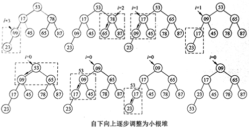

leetcode 215. Kth Largest Element in an Array
题目
题目意思是找到数组中第k大的元素
比如：
1 | 输入: [3,2,1,5,6,4], k = 2 |
方法一 partition
题目求第k大元素相当于求第Size(array)-k元素，可以使用快速排序的partition，因为partition会得到某个元素在排序后数组中的位置，利用此特性，每次计算T(n) = T(n/2) + O(n), 时间复杂度为T(n) = O(n)，但是遇到分布不均匀时，会出现T(n) = T(n-1) + O(n)，时间复杂度为T(n) = O(n^2)，leetcode的样例包括这种情况，所以pivot选择不好时，时间消耗反到比直接快排慢。
1 | class Solution { |
方法二 sort
时间复杂度O(nlgn)
1 | class Solution { |
方法三 partial_sort
stl自带部分排序方法partial_sort
1 | partial_sort(RandomIt first, RandomIt middle, RandomIt last, Compare comp); |
时间复杂度O((last-first)log(middle-first))
1 | class Solution { |
方法四 堆
可以维护大小为k的大根堆， 将所有元素放入堆中，在堆底的是第k大小的元素，需要pop() k-1次将第k大小元素拿出来。 构建大根堆需要O(n), 每次pop()需要O(lgn)，一共需要k-1次pop(), 故时间复杂度为T(n)=O(n)+(k-1)O(lgn) = klg(n)
1 | class Solution { |
构建堆过程：

- 本文链接：https://ssdemajia.github.io/2019/02/14/leetcode-215-Kth-Largest-Element-in-an-Array/
- 版权声明：本站所有文章除特别声明外，均采用 CC BY-NC-SA 3.0 CN 许可协议。转载请注明出处！